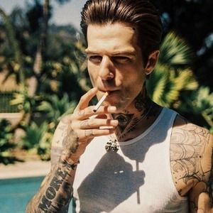

Jesse James Rutherford (born in Newbury Park August 21, 1991), also known mononymously as Jesse, is an American singer, songwriter, and actor best known for his role as the lead-singer of the alt-pop band The Neighbourhood.
Rutherford grew up with a strong interest in wearing different clothes and mixed-styles. He used to work at several clothing stores and used to change clothes five times a day during his younger days. His capability of combining multi-gender styles with designer gear pulls out his creativity in this matter.
His first solo project was released in 2011 with a mixtape named “Truth Hurts, Truth Heals”. Rutherford combines hip-hop and R&B influences to create the 17 song album. In the same year, Rutherford was connecting with other local musicians when the idea of forming a new band came up. The genre-blending pop group the Neighbourhood was created soon after, presenting a mix of atmospheric indie rock, electronica, and hip-hop beats with melodic, R&B-influenced vocals. In 2012, the band released its first song “Female Robbery” which was followed by “Sweater Weather” off of their debut studio album “I Love You.” “Sweater Weather” was a radio hit which reached number one on the Billboard Alternative Songs chart in June 2013. With The Neighbourhood, Rutherford played in several festivals like Lollapalooza (2013) and Coachella (2013 and 2018).
In early 2016, Rutherford released his 144 page book, “&”. It features pictures of himself, shot by Jessie English, that explores gender fluidity. Rutherford stated that he used clothes from his own closet, and shot until he ran out of clothes.
In the same year, Rutherford branched out and began releasing songs on Soundcloud under the name “the Factoury.” On November 10, 2017, Rutherford released his debut solo studio album, “&”, containing 11 tracks with no features. It was previously announced on November 3, through an article from Pigeons & Planes. On December 17, 2018, Jesse announced that he was going on his first solo tour in 2019.
On April 2, 2019, Jesse announced a second solo album called “GARAGEB&”, along with its album cover and the tracklist. The album was officially released on April 12, 2019. The album’s name is inspired by Jesse’s rediscovery of his love for writing music as he was trying to fight his dependency on his phone and social media. Instead of using his phone to check his social media, instead he started using the GarageBand app to make music. Ten out of the album’s 12 tracks were made on the app.